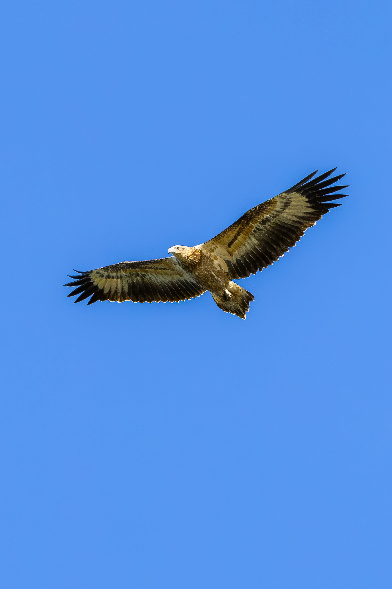

The Wedge-tailed Eagle is Australia's largest living bird of prey and one of the world's largest eagles. It has long wings, fully feathered legs and a distinctive long wedge-shaped tail that gives the species its name. Adults are generally dark brown to blackish-brown, while younger birds are lighter reddish-brown and become darker as they mature. Wedge-tailed Eagles are powerful hunters but are also important scavengers, feeding on carrion when available. They spend long periods soaring on thermal air currents while searching the landscape below.
Wedge-tailed Eagle is best separated from White-bellied Sea-Eagle by looking at the overall shape and the strongest plumage pattern rather than one small mark. Compared with White-bellied Sea-Eagle, it has a different combination of colour, proportions and typical behaviour, which becomes clearer when the whole bird is visible. Little Eagle can also resemble it in some settings, but differences in bill shape, tail length, wing pattern, posture or habitat can help narrow the identification. Calls and behaviour are useful supporting clues when plumage is difficult to see, especially for birds that spend much of their time in dense vegetation. Using several features together is more reliable than identifying the bird from a single characteristic.
IOC World Bird List v15.2 — taxonomy and nomenclature, IUCN Red List of Threatened Species — global conservation status, BirdLife International — species distribution, ecology and conservation, eBird / Cornell Lab of Ornithology — identification and life-history information